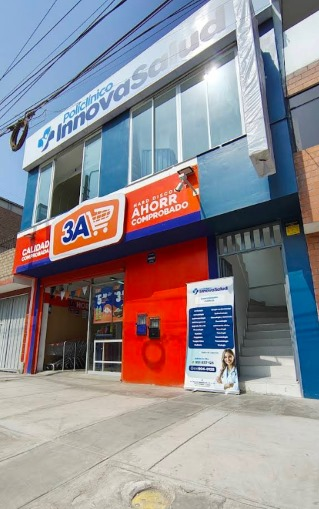

Nuestra sede
Encuéntranos fácilmente
Consulta la dirección, horarios y servicios disponibles antes de visitarnos.
InnovaSalud · Comas

DirecciónAv. Micaela Bastidas Mz. D2 Lt. 28, Comas 15316
Horario de atenciónLun–Sáb: 08:00–20:00 · Dom: 09:00–13:00
ServiciosConsultas, laboratorio, farmacia y atención de urgencias.
Teléfono951 837 123